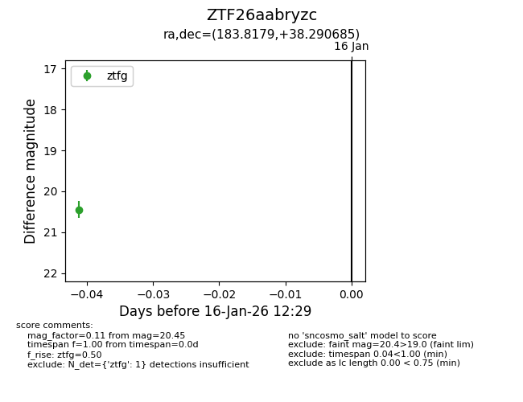
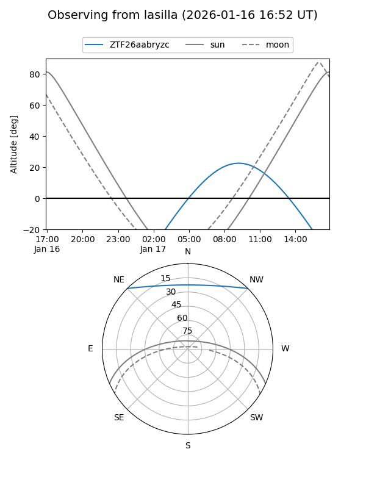
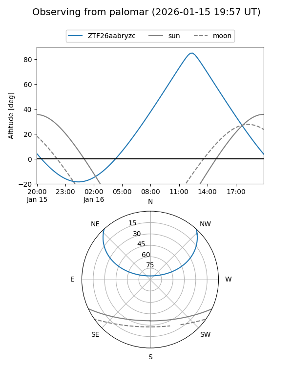

ZTF26aabryzc
Target ZTF26aabryzc at 2026-01-16 12:30
Aliases and brokers:
FINK: link
Lasair: link
ALeRCE: link
alt names
ZTF26aabryzc (ztf,fink_ztf)
Coordinates:
equatorial (ra, dec) = 183.8179,+38.29069
equatorial (HMS+DMS) = 12:15:16.28,+38:17:26.47
galactic (l, b) = (154.8480,+76.50804)
Flags:
Photometry:
last ztfg=20.45
1 ztfg detections
Lightcurve

Visibility


Additional plots